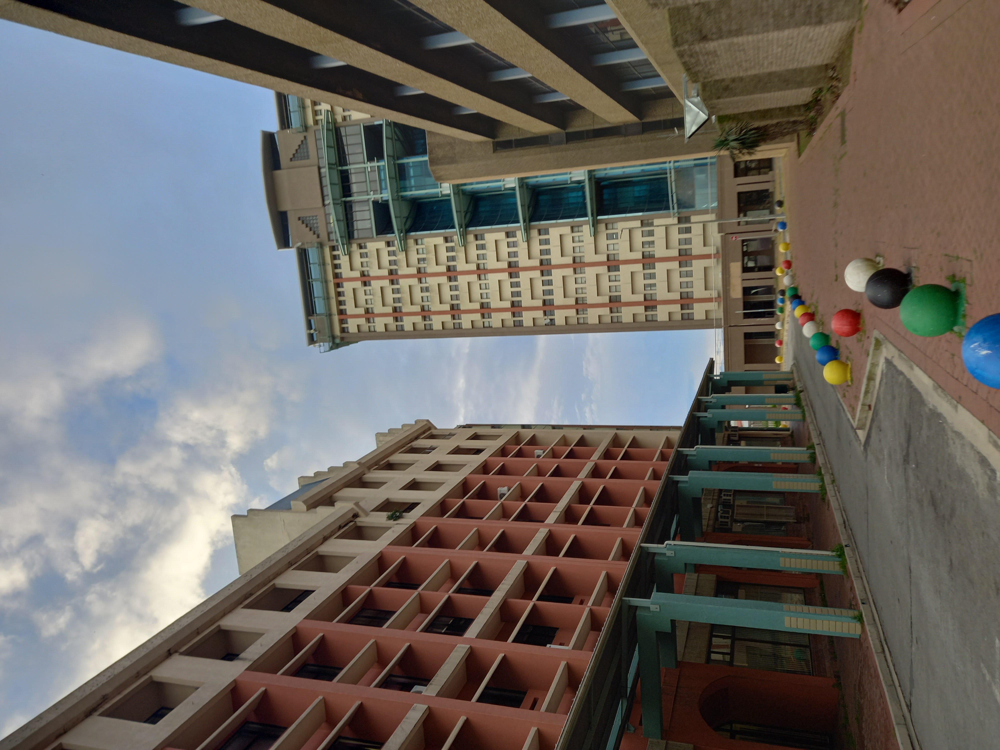

During this time of lockdown we encourage everyone to stay home,
and go out when necessary. Visit sacoronavirus.co.za
for official COVID-19 information.
Get to know the Mayor
Doing business in the City
Living in the City
Visiting the City